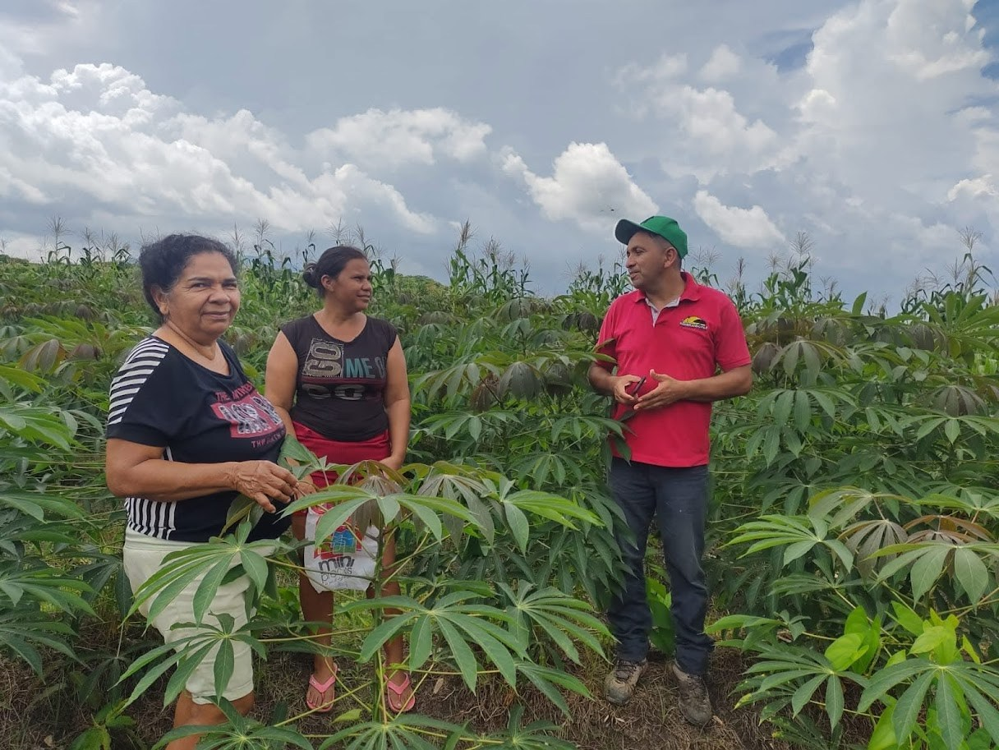
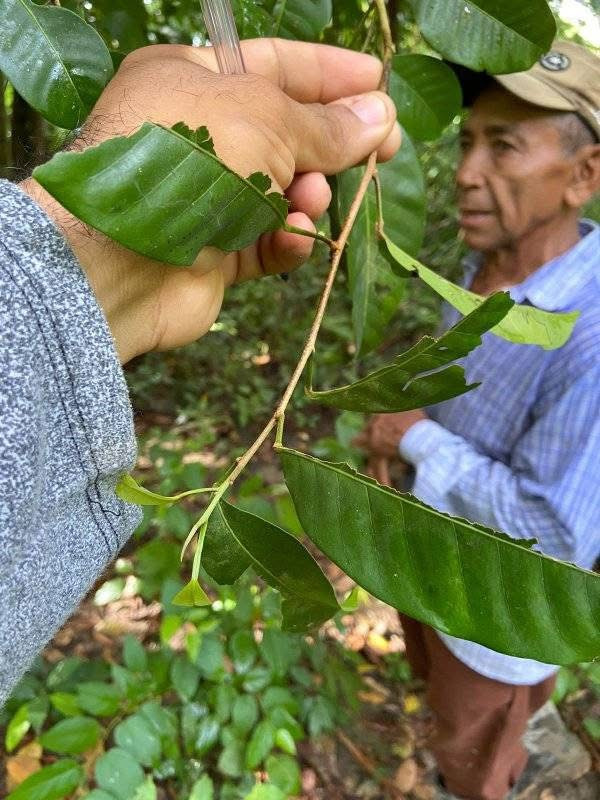
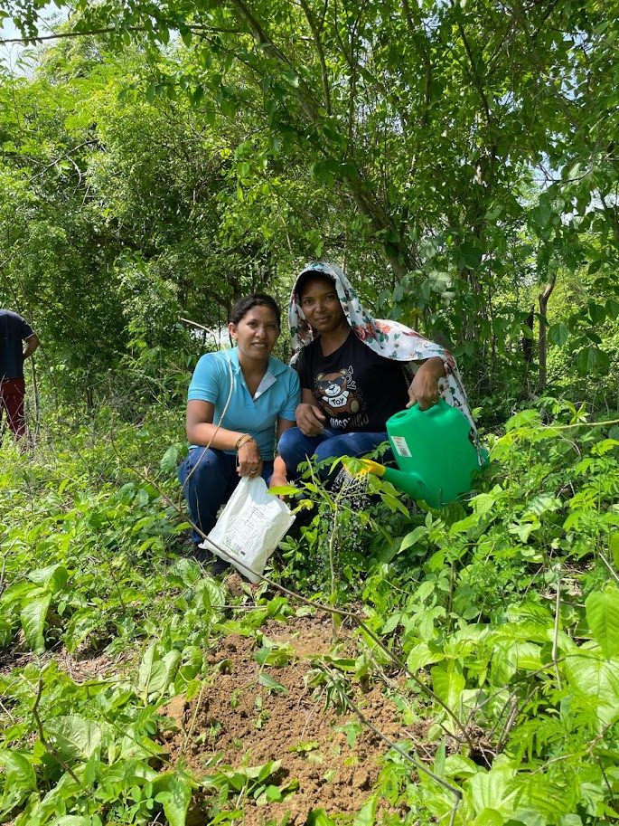

Economy for Good Living
The purpose of this strategic area is to accompany and support communities in their agricultural initiatives that lead them to dignify their living conditions. In other words, this area helps communities transition from vulnerability to sustainability. Sembrandopaz recognizes that peace cannot exist where hunger predominates, and that work on productive and economic sustainability is necessary.



Peace with hunger doesn’t last.
Economy for Good Living is rooted in a holistic approach that integrates production, ecology, and income generation to empower communities and promote sustainable development.
Production
We promote food sovereignty by supporting communities in building control over their own food systems. This not only ensures local food security, but also strengthens environmental sustainability, economic resilience, and community well-being.
Ecology
Guided by an agroecological philosophy, we encourage a way of life that goes beyond sustainable practices to foster a deep connection with nature. We work primarily in dry tropical rainforest regions, helping communities develop productive systems that protect and conserve local ecosystems while enhancing family livelihoods.
Income Generation
Using the Asset-Based Community Development (ABCD) model, we focus on what communities already have—their knowledge, skills, and resources. We support them in generating income through participatory planning, budgeting, and mindset transformation, all within a framework of community-led development.
This work materializes in the development of home and community gardens, productive projects for the planting of traditional and alternative crops such as rice, yams, cassava, corn, sesame, among others, and production of organic fertilizers. These actions value the endogenous model of peasant production, including rural technologies such as the use of biodigesters that use animal manure to produce cooking gas, among other actions carried out in the area.
Anyone who takes advantage of Sembrandopaz can defend themselves anywhere.